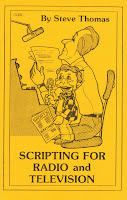

Scripting For Radio and Television
11/8/2011
By Steve Thomas
If you are a fairly regular feature on an existing show (or any other repeat venue) in makes good sense to invest in some form of filing system. Pay close attention to the material you do use, when it was aired, what show, and how well it was received. It's very important to keep tabs on your good material and your bad material. And your bad material? Absolutely! Remember that weak or bad material may be saved if it is rewritten or delivered at the appropriate time with the proper timing. Save all your material. Older material makes an ideal springboard for new material.
* * * * *
This excerpt is from the book by the same title, written by Steve Thomas and published by Maher Studios 1982, Now out of print, I have one copy to give away today via today's prize drawing. The winner is: Patricia Dunn-Anderson.
If you are a fairly regular feature on an existing show (or any other repeat venue) in makes good sense to invest in some form of filing system. Pay close attention to the material you do use, when it was aired, what show, and how well it was received. It's very important to keep tabs on your good material and your bad material. And your bad material? Absolutely! Remember that weak or bad material may be saved if it is rewritten or delivered at the appropriate time with the proper timing. Save all your material. Older material makes an ideal springboard for new material.
{kind=link}

Remember, an old joke, dressed in a new suit and told to an audience that's never heard the joke before, is a new joke. Presentation surely is the most important consideration when it comes to performing any type of humor. Whether your material is old, new, borrowed, or blue; it's the YOU in your presentation that sells it.This excerpt is from the book by the same title, written by Steve Thomas and published by Maher Studios 1982, Now out of print, I have one copy to give away today via today's prize drawing. The winner is: Patricia Dunn-Anderson.